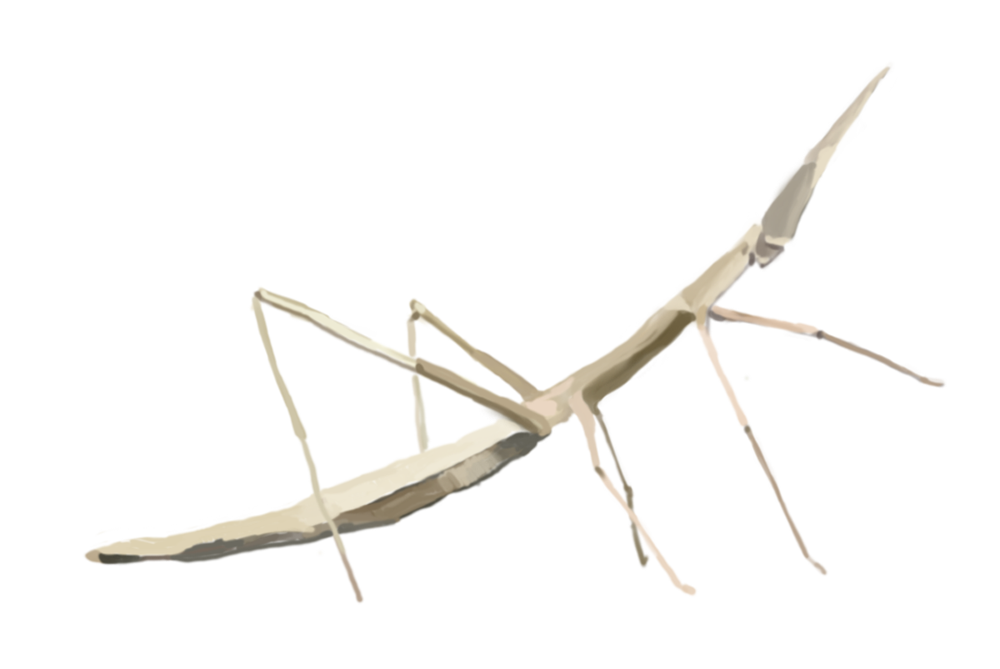
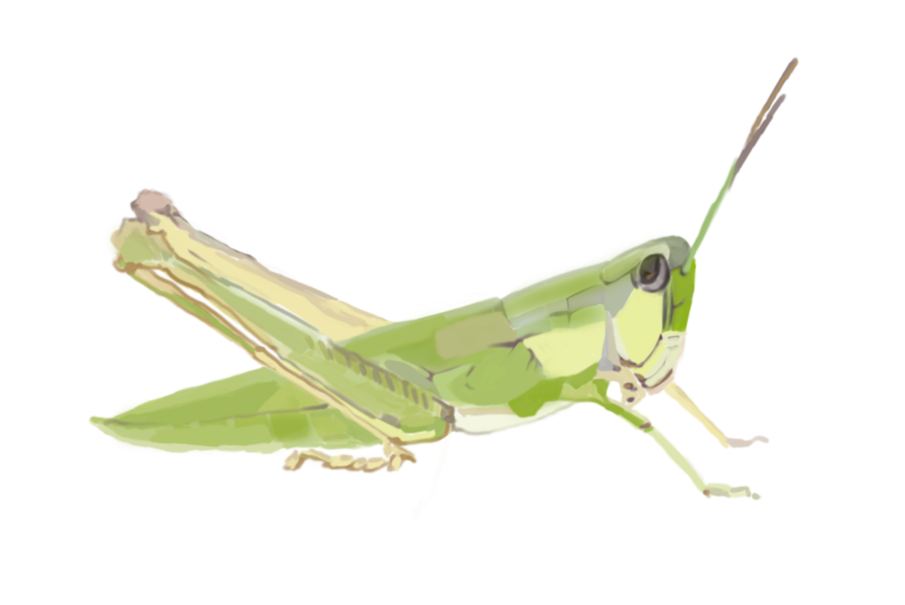
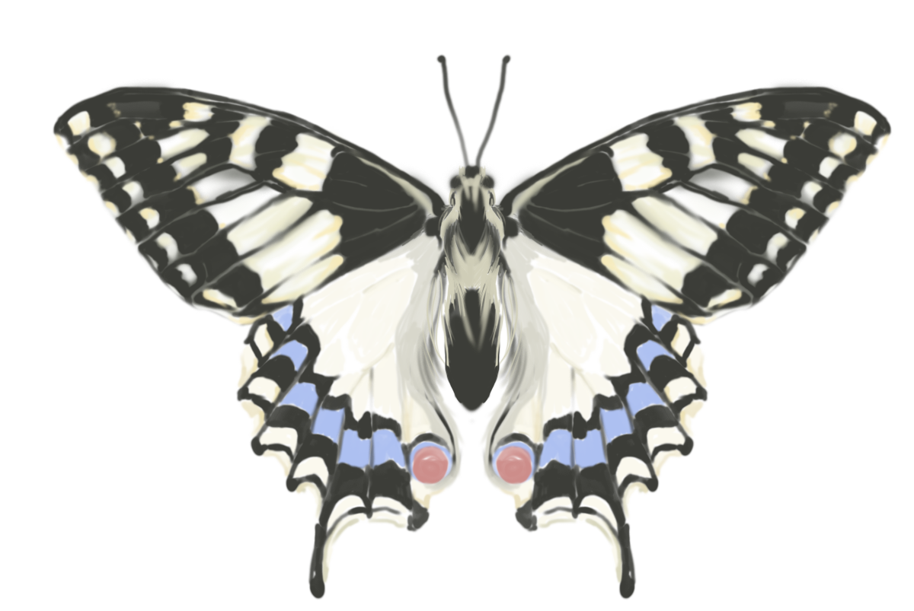
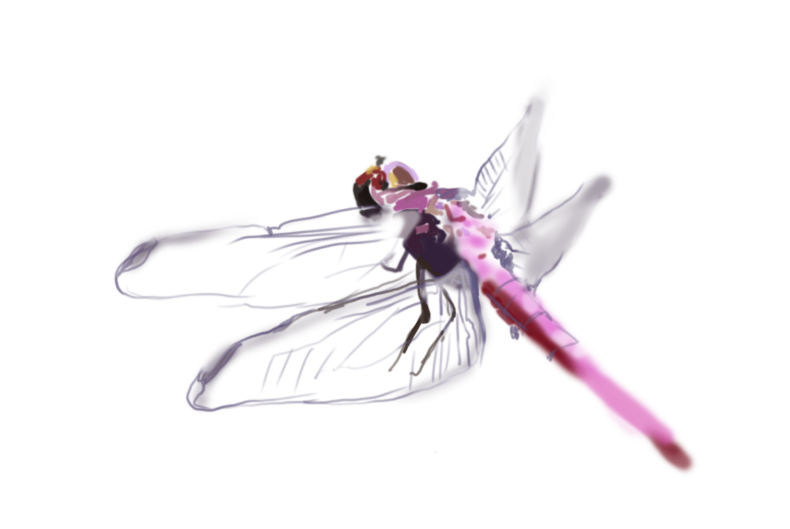
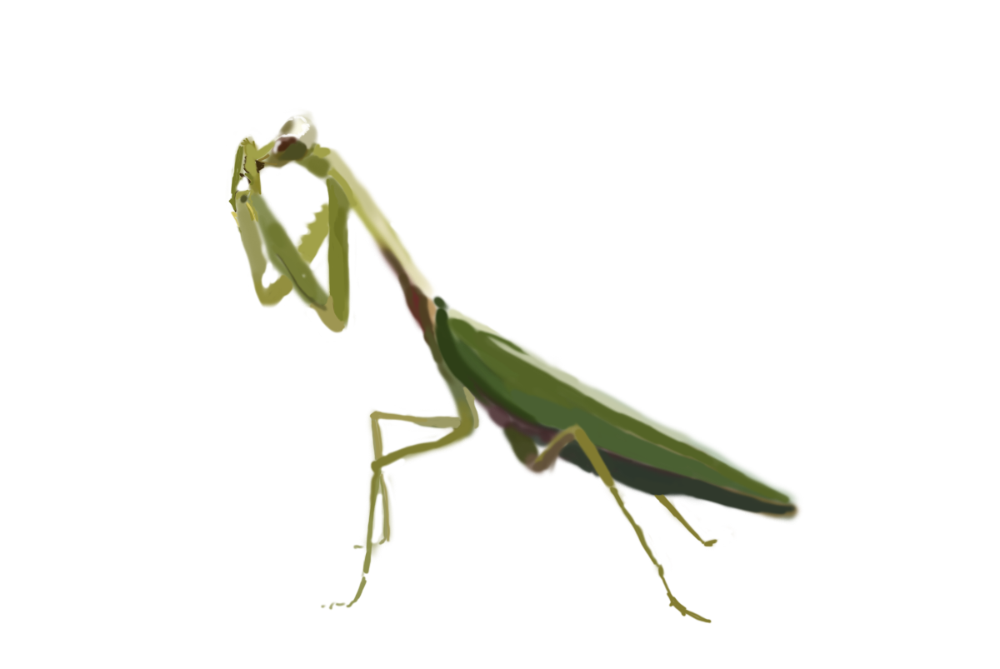

Eventos
En estas semanas me he encargado de mirar en redes y diferentes páginas de internet
cuales son los eventos interesantes, difundir su existencia y organizar la asistencia
a los mismos.
Aprendizaje
Nuestro primer Sprint consiste en comprobar que todos los miembros del equipo alcanzan
los objetivos individuales, nos ayudamos si tenemos alguna dificultad en las actividades
y preguntar, si hace falta, al equipo Adalab.
Planificación
Mi rol con este grupo durante el primer Sprint es el de planificación, que consiste en
comprobar que las tareas de Trello estén colocadas así como asegurarme de que mis
compañeras tienen las tareas correctamente ordenadas en cada sección del tablero
de pared.
Comunicación
Como encargada de comunicación, mi rol consiste en difundir a través de herramientas
como el Twitter o el Slack los logros y avances del equipo, ser la responsable de la
comunicación en los eventos y supervisar el post grupal que vamos a publicar
en el blog de Adalab.
Trabajo en equipo
Mi rol en este grupo durante este primer Sprint, es el de trabajo en equipo, que
consiste en comprobar que las tareas están divididas de forma más o menos equitativa,
pedir ayuda si la necesitamos, y en caso de conflictos, comunicarlos para tratar
de resolverlos.

Blanca
Yo soy Blanca M. Sancho. Nací en Madrid en 1980 aunque toda mi familia es de Valencia.
Estudié psicología en la Universidad Complutense de Madrid, aunque en realidad, al acabar
COU (si, soy de “aquel entonces”) iba para física, ¡me arrepentí antes
de si quiera hacer la matrícula!
Al acabar la carrera, me puse a trabajar “de lo mío” en diferentes recursos de la Comunidad
de Madrid, trabajé con enfermos mentales graves, crónicos, en discapacidad y desde hace unos
años, en enfermedades raras.
Mas de 10 años después, por mi situación laboral y personal (y un poco de quemazón por el
trabajo en lo social, todo hay que decirlo) me replanteo una reorientación laboral. ¡Y aquí
estoy! Iniciando esta aventura sin saber muy bien dónde me llevará
o cómo será el camino. ¡Pero es lo genial de las aventuras! Que no se sabe ni el cómo ni
dónde, pero seguro que merece la pena.
Llegué a ADALAB de forma bastante casual. Me pasaron la información y le estuve echando
un ojo. Muy difícil lo veía pues era complicado cuadrar horarios de mis trabajos por horas,
mi hija, la Escuela infantil… pero gracias a una serie de casualidades,
¡aquí estoy!

Cristina
Soy graduada en Bellas Artes por la Universidad de Sevilla y máster en Arte
Contemporáneo Tecnológico y Performativo en la universidad del País Vasco, Bilbao. He ampliado
su formación con seminarios, cursos y talleres dentro del ámbito
artístico relacionados con el vídeo, la tecnología, el arte sonoro y el paisaje. Actualmente
centro mi interés en los mass-media, trabajando desde la investigación, la experimentación
desde la mirada, tanto del observado como de los propios artistas
cuestionando nuestro entorno paisajístico natural con y para la red, por ese motivo y con especial interés en los avances en el mundo de la programación,
se me presentó la oportunidad de reinventarse como programadora en el programa que ofrece Adalab, con grandes expectativas para mi futuro.

Aída
Mi nombre es Aída y nací en los maravillosos 80's en Palma de Mallorca.
Desde los tres años me he he dedicado a trabajar con “La reina de las artes”, es decir,
soy maga.
Por motivos personales este año he decidido cambiar el rumbo de mi vida haciendo otro
tipo de magia; la programación.
Se me he presentado una magnífica oportunidad y me he inscrito en el curso que ofrece
Adalab, en el que, además de conocer a gente fantástica, estoy aprendiendo muchísimos
“hechizos” nuevos. Y creo que puedo decir con orgullo: ¡Soy “Adalaber”!

Claudia
Me llamo Claudia M. Ioja soy periodista digital especializada en marketing digital,
escritora y emprendedora.
Nací en Bucarest en 1988. En 2008 me mudé a Madrid, atraída por la cultura española.
Me gradué en periodismo en la Universidad Spiru Haret en 2011.
Soy una persona muy curiosa con ganas de aprender cosas nuevas constantemente. Tengo
una mentalidad líquida, capaz de adaptarse con facilidad a entornos cambiantes, y mi
fortaleza es ser estratega para poder ver las soluciones donde parece que no
hay nada. Me gustan los animales, la naturaleza y la cultura.
En 2016, tras ganar una beca en la EOI en Madrid, he estudiado un postgrado de marketing
digital donde he podido ampliar mis conocimientos de SEO, SEM y social media. Al acabar
el postgrado he decido emprender, y tuve la oportunidad de participar
en un programa europeo de mentorización para emprendedores. Al comienzo de 2017, entendí
que tenía que seguir ampliando mis conocimientos técnicos con una formación relacionada
al diseño web y en Marzo, a través del programa “Aquí hay trabajo”
he visto el curso de Front-end de Adalab.
Ahora, yo también soy una ¡Adalaber! y en solamente 3 meses dominaré el Html, Css y
JavaScript.

Laura
Mi nombre es Laura, nací en Bilbao pero llevo muchos años en La Meseta.
Estudié F.P.II de Informática de Gestión, y toda mi experiencia tiene que ver con la informática,
mayoritariamente en desarrollo de software de aplicaciones de escritorio, con VB, Access
y SQL Server.
Me gusta la sensación de crear algo partiendo de cero y que sirva para ayudar a otras personas.
Me quedé estancada en mi trabajo, me di cuenta de que todo había dejado de tener sentido para
mí, y decidí cambiar de rumbo para poder crecer.
A través de las redes sociales conocí el proyecto de Adalab, y me encantó :)
Emocionada con esta gran oportunidad de poder reinventarme en AdaLab. Y de aquí, hasta el
infinito y más allá! :)